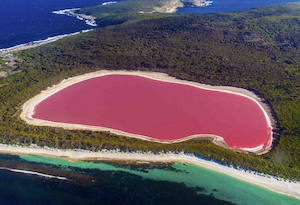

My favorite city is Dakar, because there are several places to visit such as the island of Gorée or called also the island of slaves

There is a whole history of the slave trade there too,there is the pink lake
and we have the monument of the Renaissance which reaches a height of 157 meters.